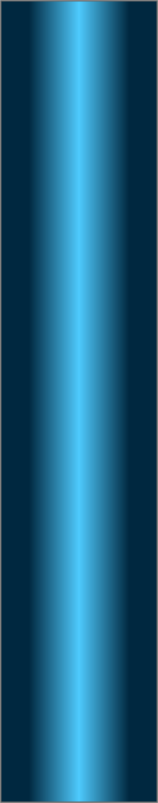
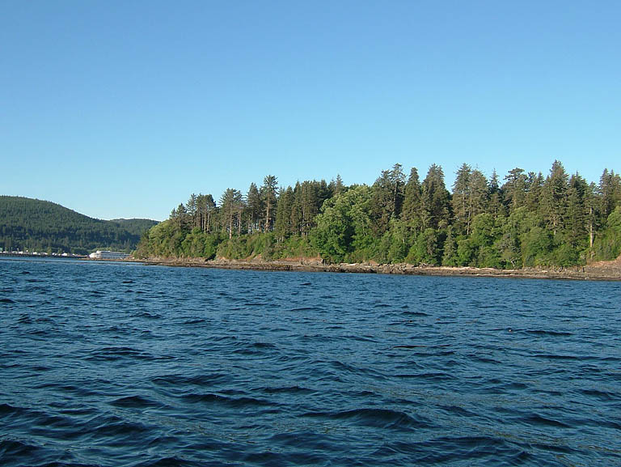
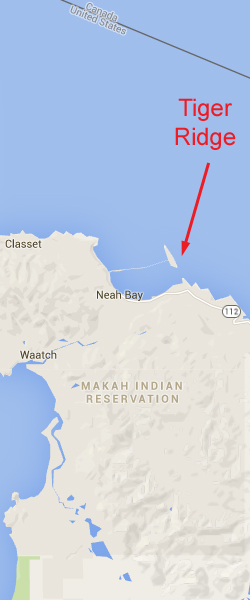
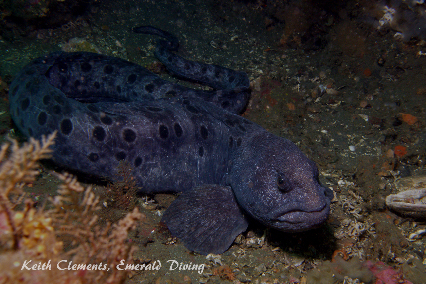
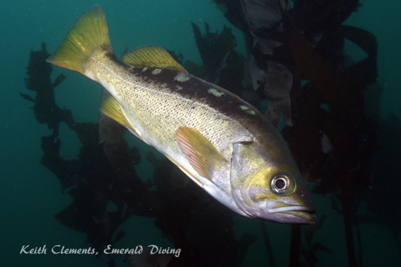

Double click to edit

Tiger Ridge
Topography: Angled rock ridge that extends 10-20 feet above the substrate.
Cape Flattery marine life rating: 4
Cape Flattery structure rating: 4
Highlight: Wonderful drift dive! Abundant tiger and canary rockfish. Occasional trumpet sponges.
Typical Diving Depth: 65-75 feet
Skill level: Advanced
GPS coordinates: N48° 22.973’ W124° 35.393’
Access by boat: This particular ridge is located northeast of Waadah Island. Waadah Island marks the northeast perimeter of Neah Bay - in fact this island makes up a section of the Neah Bay breakwater.
The base of the ridge lies in about 50 to 60 feet of water. The southeast end of the ridge is a few hundred yards from a set of exposed rocks near the southeast end of Waadah Island. The ridge then runs northwest and parallel to Wadaah Island. The ridge is easily detected with a depth sounder by a brief 15 to 25 foot jump in depth when headed perpendicular to Waadah Island.
Shore access: None
Dive profile: I start my dives on the southeast corner of the ridge with the intent to drift northwest. The southeast end of the ridge comes within about 25 feet of the surface and is the shallowest part of the ridge.
Kelp sometimes marks this end of this reef if no current is present. If the current is slack, I follow the kelp to the bottom, head southwest, and descend over the ridge. I follow the ridge to the northwest until I hit my turn point. I then reserve my course and end my dive back in the kelp where I started.
The dive plan above works great except for one detail; the current is not often slack. I normally do a one way drift dive at this site. My dive plan is to use the current to drift northwest. The ridge and surrounding rocky structure offer ample opportunities to duck out of the current and explore sections of the ridge. I fin back into the current and let it push me along the ridge when I am ready to move. I drift a good quarter to half a mile from the entry point by the time my no-deco time runs low. I usually end up in about in 75 feet of water with the ridge top at about 65 feet. I shoot my signal marker buoy before leaving the ridge and perform a free ascent to end the dive.
The structure at Tiger Ridge is phenomenal. The ridge is composed of massive sheets of rock that have been thrust upward from the substrate at a 45 degree angle. The inside of the ridge creates an overhang that faces Waadah Island. This overhang provides excellent protection from the brunt of the current. Boulders, ledges, and other rocky formations line the inside of the ridge and create excellent habitat for both invertebrates and fish. A broken white shell substrate meets the base of the ridge.
My preferred gas mix: EAN 38
Current observations:
Current table: Strait of Juan de Fuca (Entrance)
Noted Slack Corrections: None
I have not been able to time slack at this site, but I have no reservations diving this site off-slack as long as the surface conditions are favorable. In fact, I prefer to drift dive this ridge. The one certainty is current heads northwest along the inside of the ridge regardless if the tide is flooding or ebbing.
Boat launch:
Neah Bay Marina boat ramp. Approximately 2 miles from the dive site.
Facilities: None
Hazards:
Current: A mild to moderate current always run northwest along the inside of this ridge off-slack.
Free ascent: Divers must be prepared to execute a free ascent in current from depths of 55 to 75 feet when drift diving this site.
Offshore location: The nearest land is several hundred yards away and very difficult to swim to given the strong current in this area.
Swell: The swell at the entry point is usually not as intense as swell at the exit point during drift dives. I have ended several drift dives at this site in six foot swell, even though the swell was two feet or less where I started my dive.
Fog: Thick fog is common in this area and can make tracking drifting divers difficult, if not impossible.
Boat traffic: Boat traffic to and from Neah Bay often runs over this site and is especially heavy during fishing season.
Fishing boats: This ridge is a popular bottom fishing area.
Snagging hazards: Discarded tackle, monofilament line, and downrigger balls with stainless steel cable are commonly found throughout this ridge.
Fog: Fog is common throughout the Cape Flattery area, even in summer. Thick fog makes it difficult, if not impossible, to find a surfaced drift diver.
Marine life: This site offers essentially the same marine life encounters as the other ridge system dives in the Strait of Juan de Fuca, which means it is absolutely outstanding. I often spot a dozen or more tiger rockfish while diving this site. I always check behind me when drift diving as tiger rockfish, wolfeels, and other fish often hide on the leeward side of structure. Curious canary rockfish often join me as I drift and explore the base of the ridge. I regularly find wolfeel or giant Pacific octopus in dens or sitting out in the open on one of the many sheltered ledges along the ridge. Invertebrate life is also outstanding and includes some beautiful animals such as the purple-ring topsnail and oddities such as the trumpet sponge.
Cape Flattery marine life rating: 4
Cape Flattery structure rating: 4
Highlight: Wonderful drift dive! Abundant tiger and canary rockfish. Occasional trumpet sponges.
Typical Diving Depth: 65-75 feet
Skill level: Advanced
GPS coordinates: N48° 22.973’ W124° 35.393’
Access by boat: This particular ridge is located northeast of Waadah Island. Waadah Island marks the northeast perimeter of Neah Bay - in fact this island makes up a section of the Neah Bay breakwater.
The base of the ridge lies in about 50 to 60 feet of water. The southeast end of the ridge is a few hundred yards from a set of exposed rocks near the southeast end of Waadah Island. The ridge then runs northwest and parallel to Wadaah Island. The ridge is easily detected with a depth sounder by a brief 15 to 25 foot jump in depth when headed perpendicular to Waadah Island.
Shore access: None
Dive profile: I start my dives on the southeast corner of the ridge with the intent to drift northwest. The southeast end of the ridge comes within about 25 feet of the surface and is the shallowest part of the ridge.
Kelp sometimes marks this end of this reef if no current is present. If the current is slack, I follow the kelp to the bottom, head southwest, and descend over the ridge. I follow the ridge to the northwest until I hit my turn point. I then reserve my course and end my dive back in the kelp where I started.
The dive plan above works great except for one detail; the current is not often slack. I normally do a one way drift dive at this site. My dive plan is to use the current to drift northwest. The ridge and surrounding rocky structure offer ample opportunities to duck out of the current and explore sections of the ridge. I fin back into the current and let it push me along the ridge when I am ready to move. I drift a good quarter to half a mile from the entry point by the time my no-deco time runs low. I usually end up in about in 75 feet of water with the ridge top at about 65 feet. I shoot my signal marker buoy before leaving the ridge and perform a free ascent to end the dive.
The structure at Tiger Ridge is phenomenal. The ridge is composed of massive sheets of rock that have been thrust upward from the substrate at a 45 degree angle. The inside of the ridge creates an overhang that faces Waadah Island. This overhang provides excellent protection from the brunt of the current. Boulders, ledges, and other rocky formations line the inside of the ridge and create excellent habitat for both invertebrates and fish. A broken white shell substrate meets the base of the ridge.
My preferred gas mix: EAN 38
Current observations:
Current table: Strait of Juan de Fuca (Entrance)
Noted Slack Corrections: None
I have not been able to time slack at this site, but I have no reservations diving this site off-slack as long as the surface conditions are favorable. In fact, I prefer to drift dive this ridge. The one certainty is current heads northwest along the inside of the ridge regardless if the tide is flooding or ebbing.
Boat launch:
Neah Bay Marina boat ramp. Approximately 2 miles from the dive site.
Facilities: None
Hazards:
Current: A mild to moderate current always run northwest along the inside of this ridge off-slack.
Free ascent: Divers must be prepared to execute a free ascent in current from depths of 55 to 75 feet when drift diving this site.
Offshore location: The nearest land is several hundred yards away and very difficult to swim to given the strong current in this area.
Swell: The swell at the entry point is usually not as intense as swell at the exit point during drift dives. I have ended several drift dives at this site in six foot swell, even though the swell was two feet or less where I started my dive.
Fog: Thick fog is common in this area and can make tracking drifting divers difficult, if not impossible.
Boat traffic: Boat traffic to and from Neah Bay often runs over this site and is especially heavy during fishing season.
Fishing boats: This ridge is a popular bottom fishing area.
Snagging hazards: Discarded tackle, monofilament line, and downrigger balls with stainless steel cable are commonly found throughout this ridge.
Fog: Fog is common throughout the Cape Flattery area, even in summer. Thick fog makes it difficult, if not impossible, to find a surfaced drift diver.
Marine life: This site offers essentially the same marine life encounters as the other ridge system dives in the Strait of Juan de Fuca, which means it is absolutely outstanding. I often spot a dozen or more tiger rockfish while diving this site. I always check behind me when drift diving as tiger rockfish, wolfeels, and other fish often hide on the leeward side of structure. Curious canary rockfish often join me as I drift and explore the base of the ridge. I regularly find wolfeel or giant Pacific octopus in dens or sitting out in the open on one of the many sheltered ledges along the ridge. Invertebrate life is also outstanding and includes some beautiful animals such as the purple-ring topsnail and oddities such as the trumpet sponge.






Canary Rockfish
Tiger Rockfish
Wolf Eel
Nanaimo Dorids
China Rockfish
Underwater imagery from this site

Orange Peel Nudibranch

Yellowtail Rockfish